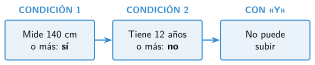

Operadores aritméticos, de comparación y lógicos
🤔 Pienso5 min
Qué hago aquí: Piensa un momento y contesta con lo que ya sabes. No pasa nada si no lo sabes: es para empezar.
Escribe V (verdadero) o F (falso): a) 10 es mayor que 8. b) 3 es igual a 4. c) Hoy es lunes y llueve.
📖 Leo y aprendo15 min
Qué hago aquí: Lee despacio, mira los dibujos y los ejemplos, y quédate con la idea clave del final.
Los operadores son símbolos que hacen algo con los datos. Hay tres tipos.
Los operadores para comparar dan true (verdadero) o false (falso). Por ejemplo, 3 < 8 es true.
Los operadores para unir juntan dos condiciones:
- y (
&&): se tienen que cumplir las dos. - o (
||): basta con que se cumpla una.

✏️ Hago25 min
Qué hago aquí: Haz las actividades en orden. Empieza siempre por las básicas.
Calcula: 4 + 2 * 3 (4 + 2) * 3 20 / 4
a vale 7 y b vale 10. Escribe true o false: a < b a == b b > 10
¿Qué operador usarías? a) saber si dos números son iguales; b) sumar puntos; c) que se cumplan dos cosas a la vez.
Completa la tabla con true o false.
| Llueve | Hace frío | Llueve y hace frío | Llueve o hace frío |
|---|---|---|---|
| true | true | ||
| true | false | ||
| false | false |
Escribe la condición con operadores: la nota está entre 5 y 10.
✏️ Puedes responder escribiendo, con un dibujo o un esquema, o contándolo en voz alta.
🚀 Amplío (si quieres saber más)
Qué hago aquí: ¿Has terminado? Lee la curiosidad o elige el reto. Es voluntario.
Escribe una condición que sea true solo si n es múltiplo de 3. Pruébala en la consola de App Lab.
✅ Compruebo5 min
Qué hago aquí: Contesta sin mirar la ficha y marca cómo lo llevas.